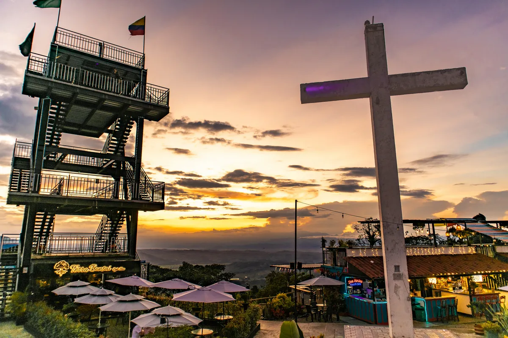

Salento · Colombia
De Alto de la Cruz is het uitkijkpunt boven Salento — bereikbaar via 253 steile treden die het kleurrijke dorp verlaten en uitkomen op een kruisje met een panoramisch uitzicht over de groene koffieheuvels. Perfect voor de zonsondergang.
Salento zelf is een van de meest pittoreske dorpjes van Colombia — met kleurrijke bahareque-architectuur (houten gevels in azuurblauw, geel en groen), lokale cantines, artiestenwinkeltjes en de gezellige Calle Real die uitloopt op het centrale plein. Loop er rustig doorheen voor je de trap beklimt.

Leading north from the plaza, the narrow Calle Real with its classic metal lamps is the town’s most picturesque street and is lined with cafes, restaurants and handicrafts shops. At the far end of the street, a taxing set of steps lead up the steep Alto de la Cruz hill where two spectacular lookout points can be found, one looking back over town and the other out toward the Valle de Cocora and the Parque Nacional Natural Los Nevados, where on a clear day it’s possible to see some of the highest peaks in the reserve.
De Alto de la Cruz is bereikbaar via een steile trap aan het einde van Calle Real. Vanaf de top geniet je van twee uitkijkpunten: één over het kleurrijke dorpje Salento zelf, en één richting het Valle de Cocora met zijn wasbomen. Bij helder weer zijn zelfs de besneeuwde toppen van het Parque Nacional Natural Los Nevados zichtbaar. Beste bezoektijd is rond zonsondergang.
• Ga bij zonsondergang — de lichtval over de groene heuvels is prachtig
• Wandel eerst door de Calle Real en langs het plein voor je de trap op gaat
• Het dorp heeft veel goede restaurants en bars — probeer de trucha (forel)
• Helado de paila (handgemaakt ijs in een bronzen kom) is een must-try
• Op het plein 's avonds: jeep-races, straatartiesten en lokale sfeer